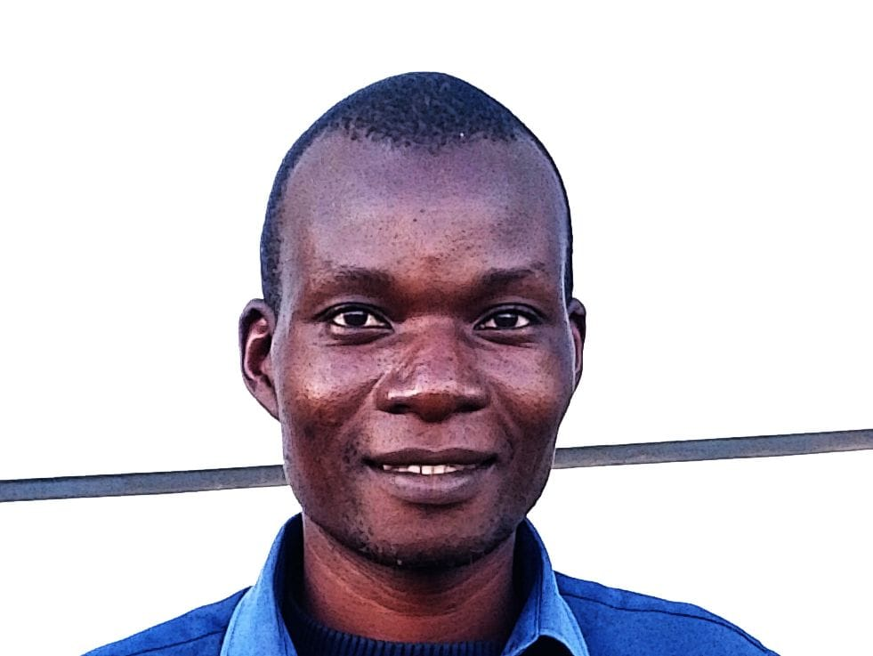

Welcome to My Personal Website

"self motivated and always dedicated." - Lovemore B Phiri
About This Site
Welcome to my personal narrative website. Here you'll find information about my hobbies, educational background, travel experiences, and future aspirations. Use the navigation menu on the left to explore different aspects of my life and journey.
Hobbies & Interests
Discover what I'm passionate about in my free time.
Educational Journey
Learn about my academic background and achievements.
Travel Adventures
Explore the places I've visited and experiences I've had.
Future Aspirations
Find out about my goals and dreams for the future.